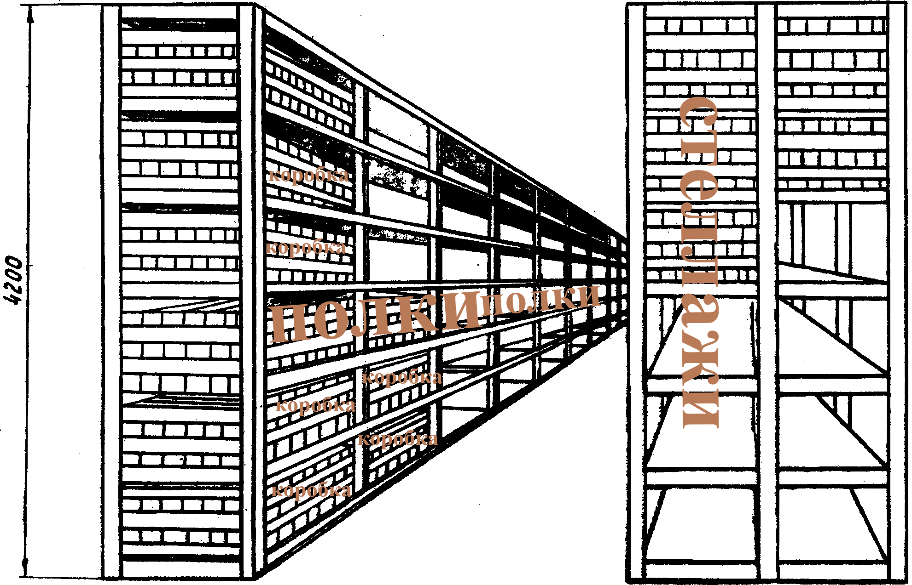
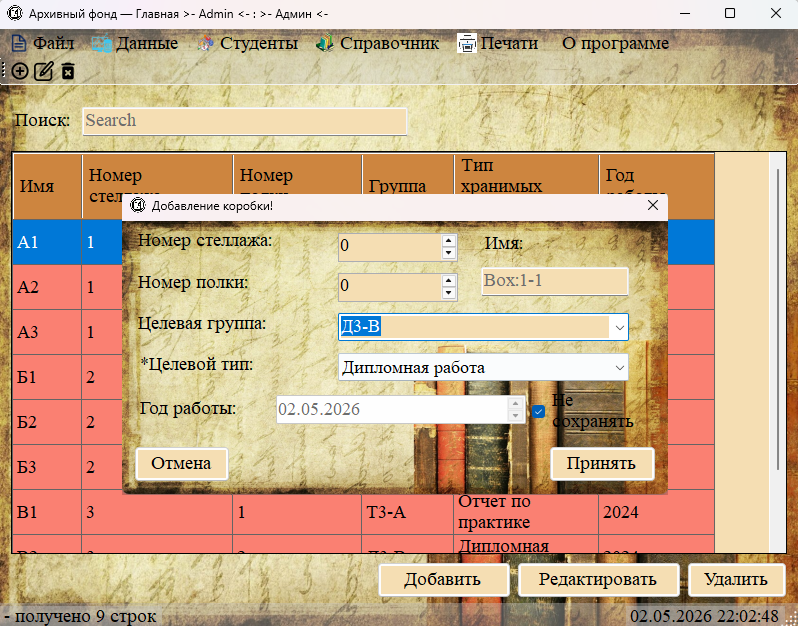
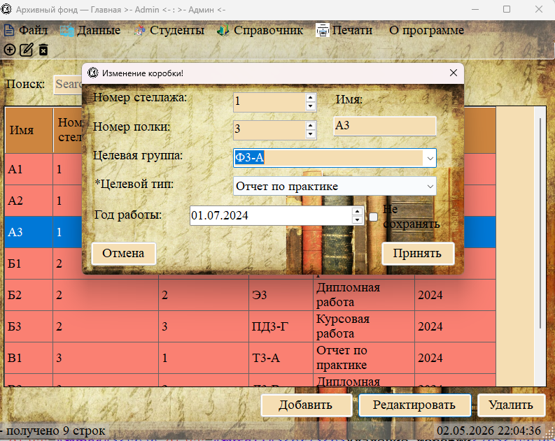
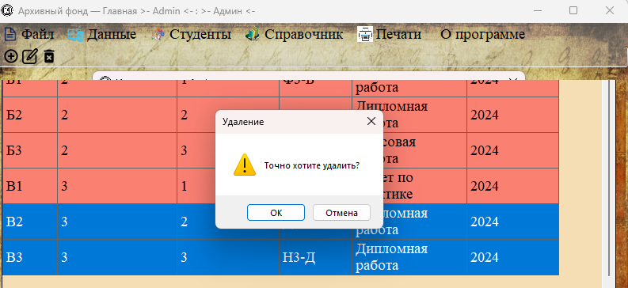
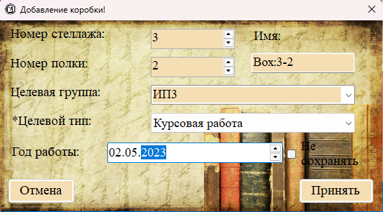
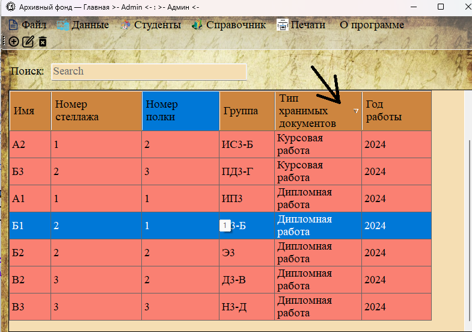

Раздел «Коробки» (меню «Данные → Коробки») предназначен для учёта физических мест хранения документов в архиве.
Организация физического хранения

Рис. 1. Схема организации хранения: стеллажи → полки → коробки
В архиве техникума установлены пронумерованные стеллажи (например, 18 штук), каждый из которых содержит по нескольку полок (например, 6). На полках в коробках хранятся документы.
Отображаемые поля (колонки таблицы)

Рис. 2. Раздел «Коробки» — список всех мест хранения
| Название колонки | Описание |
|---|---|
| Имя | Уникальное имя коробки (например, «Box:1-1», «А10», «Н1»). |
| Номер стеллажа | Номер стеллажа, на котором стоит коробка. |
| Номер полки | Номер полки на стеллаже. |
| Группа | Учебная группа, к которой относятся документы в коробке. |
| Тип хранимых документов | Тип документов, находящихся в коробке (курсовые, дипломы, отчёты по практике). |
| Год работы | Год, к которому относятся документы в коробке. |
Добавление новой коробки

Рис. 3. Форма добавления новой коробки
Поля формы:
— Номер стеллажа — числовое поле со стрелками (счётчик).
— Номер полки — числовое поле со стрелками (счётчик).
— Имя — текстовое поле. Автозаполнение: если номер стеллажа и полки больше 0, а имя пустое, при получении фокуса полем автоматически подставляется «Box:1-1» (где 1 и 1 — номера стеллажа и полки).
— Целевая группа — выпадающий список со всеми учебными группами.
— Целевой тип (обязательное) — выпадающий список с типами документов (из справочника).
— Год работы — календарь для выбора года. Рядом — чекбокс «Не сохранять»: если установлен, год не записывается в базу.
Редактирование коробки

Рис. 4. Форма редактирования коробки (заголовок «Изменение коробки»)
Для редактирования коробки:
1. Выделите строку с нужной коробкой в таблице.
2. Нажмите кнопку «Редактировать».
3. Форма откроется с уже заполненными полями.
4. Внесите изменения и нажмите «Принять».
Удаление коробки

Важно: При удалении коробки:
— У документов, привязанных к этой коробке, значение коробки станет пустым (ON DELETE SET NULL).
— Сама коробка будет удалена из справочника.
Практический пример использования

Пример: Коробка «Box:3-2» находится на стеллаже №3, полка №2. В ней хранятся курсовые работы группы «ИП3» за 2023 год.
Поиск и фильтрация
Для раздела «Коробки» доступны:
— Строка поиска — поиск по имени коробки, группе, типу документов.
— Фильтр по столбцам — можно отфильтровать коробки по номеру стеллажа, группе или типу документов.

Рис. 5. Фильтрация коробок по типу хранимых документов